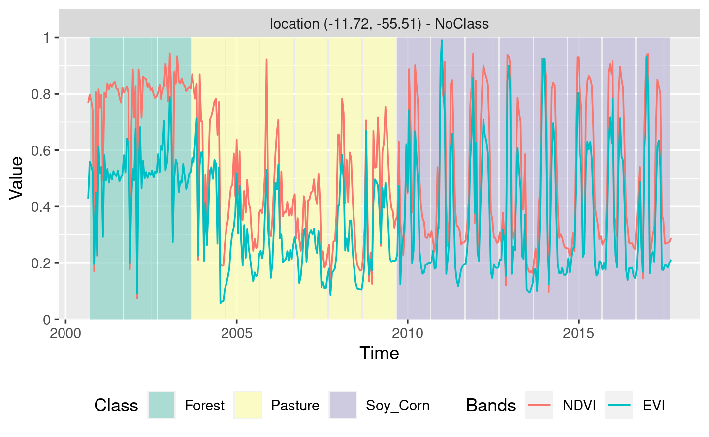
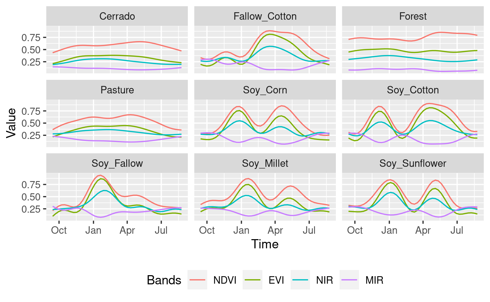
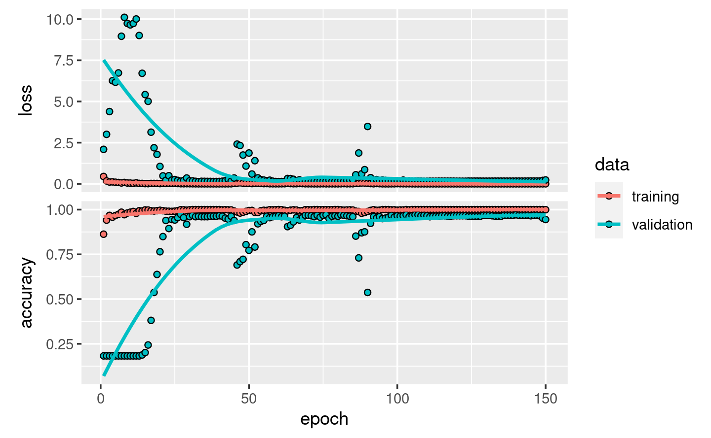
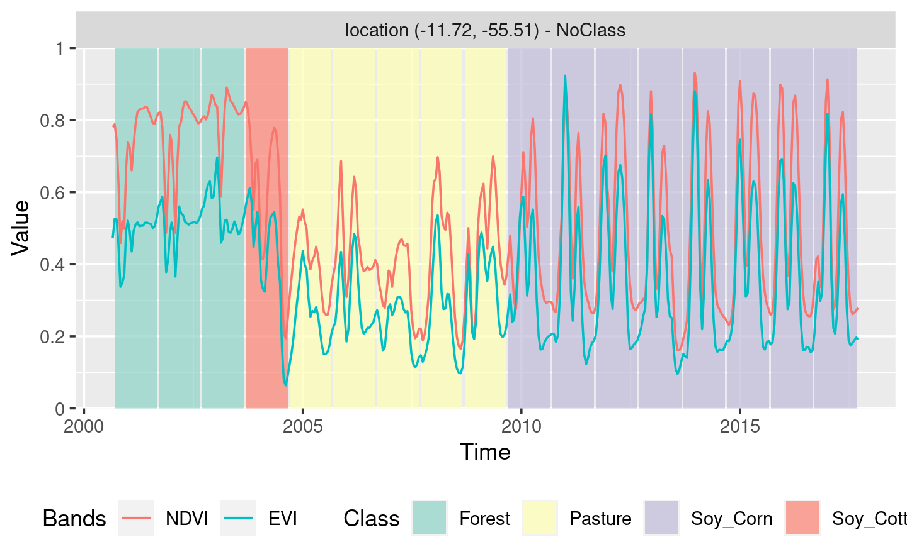

Chapter 5 Machine Learning for Data Cubes using the SITS package
This chapter presents the machine learning techniques available in SITS. The main use for machine learning in SITS is for classification of land use and land cover. These machine learning methods available in SITS include linear and quadratic discrimination analysis, support vector machines, random forests, deep learning and neural networks.
5.1 Machine learning classification
There has been much recent interest in using classifiers such as support vector machines (Mountrakis, Im, and Ogole 2011) and random forests (Belgiu and Dragut 2016) for remote sensing images. Most often, researchers use a approach. The dimension of the decision space is limited to the number of spectral bands or their transformations. Sometimes, the decision space is extended with temporal attributes. To do this, researchers filter the raw data to get smoother time series (Brown et al. 2013; Kastens et al. 2017). Using software such as TIMESAT (Jonsson and Eklundh 2004), they derive a small set of phenological parameters from vegetation indexes, like the beginning, peak, and length of the growing season (Estel et al. 2015; Pelletier et al. 2016).
Most studies using satellite image time series for land cover classification use a approach. For multiyear studies, most researchers first derive best-fit yearly composites and then classify each composite image (Gomez, White, and Wulder 2016). As an alternative, the sits package provides support for the classification of time series, preserving the full temporal resolution of the input data, using a approach. The idea is to have as many temporal attributes as possible, increasing the classification space’s dimension. Each temporal instance of a time series is taken as an independent dimension in the classifier’s feature space. To the authors’ best knowledge, the classification techniques for image time series included in the package are not previously available in other R or python packages. Furthermore, the package provides filtering, clustering, and post-processing methods that have not been published in the literature.
Current approaches to image time series analysis still use a limited number of attributes. A common approach is deriving a small set of phenological parameters from vegetation indices, like the beginning, peak, and length of growing season (Brown et al. 2013), (Kastens et al. 2017), (Estel et al. 2015), (Pelletier et al. 2016). These phenological parameters are then fed in specialized classifiers such as TIMESAT (Jonsson and Eklundh 2004). These approaches do not use the power of advanced statistical learning techniques to work on high-dimensional spaces with big training data sets (James et al. 2013). Package *sits** uses the full depth of satellite image time series to create larger dimensional spaces, an approach we consider to be more appropriate to use with machine learning.
sits has support for a variety of machine learning techniques: linear discriminant analysis, quadratic discriminant analysis, multinomial logistic regression, random forests, boosting, support vector machines, and deep learning. The deep learning methods include multi-layer perceptrons, 1D convolution neural networks and mixed approaches such as TempCNN (Pelletier, Webb, and Petitjean 2019) . In a recent review of machine learning methods to classify remote sensing data (Maxwell, Warner, and Fang 2018), the authors note that many factors influence the performance of these classifiers, including the size and quality of the training dataset, the dimension of the feature space, and the choice of the parameters. We support both and approaches. Therefore, the sits package provides functionality to explore the full depth of satellite image time series data.
When used in approach, sits treats time series as a feature vector. To be consistent, the procedure aligns all time series from different years by its time proximity considering an given cropping schedule. Once aligned, the feature vector is formed by all pixel “bands”. The idea is to have as many temporal attributes as possible, increasing the dimension of the classification space. In this scenario, statistical learning models are the natural candidates to deal with high-dimensional data: learning to distinguish all land cover and land use classes from trusted samples exemplars (the training data) to infer classes of a larger data set.
SITS provides support for the classification of both individual time series as well as data cubes. The following machine learning methods are available in SITS:
- Linear discriminant analysis (
sits_lda) - Quadratic discriminant analysis (
sits_qda) - Multinomial logit and its variants ‘lasso’ and ‘ridge’ (
sits_mlr) - Support vector machines (
sits_svm) - Random forests (
sits_rfor) - Extreme gradient boosting (
sits_xgboost) - Deep learning (DL) using multi-layer perceptrons (
sits_deeplearning) - DL with 1D convolutional neural networks (
sits_FCN) - DL using Deep Residual Networks (
sits_ResNet) - DL combining 1D CNN and multi-layer perceptron networks (
sits_TempCNN) - DL using a combination of long-short term memory (LSTM) and 1D CNN (
sits_LSTM-FCN)
For the machine learning examples, we use the data set “samples_matogrosso_mod13q1”, containing a sits tibble with time series samples from Brazilian Mato Grosso State (Amazon and Cerrado biomes), obtained from the MODIS MOD13Q1 product. The tibble with 1,892 samples and 9 classes (“Cerrado”, “Fallow_Cotton”, “Forest”, “Millet_Cotton”, “Pasture”,“Soy_Corn”, “Soy_Cotton”, “Soy_Fallow”, “Soy_Millet”). Each time series comprehends 12 months (23 data points) with 6 bands (“NDVI”, “EVI”, “BLUE”, “RED”, “NIR”, “MIR”) . The dataset was used in the paper “Big Earth observation time series analysis for monitoring Brazilian agriculture” (Picoli et al. 2018), and is available in the R package “sitsdata”, which is downloadable from the website associated to the “e-sensing” project.
5.2 Visualizing Samples
One useful way of describing and understanding the samples is by plotting them. A direct way of doing so is using the plot function, as discussed in Chapter 3. In the plot, the thick red line is the median value for each time instance and the yellow lines are the first and third interquartile ranges.
data("samples_matogrosso_mod13q1")
# Select a subset of the samples to be plotted
# Retrieve the set of samples for the Mato Grosso region
samples_matogrosso_mod13q1 %>%
sits_select(bands = "NDVI") %>%
dplyr::filter(label == "Forest") %>%
plot()
An alternative to visualise the samples is to estimate a statistical approximation to an idealized pattern based on a generalised additive model (GAM). A GAM is a linear model in which the linear predictor depends linearly on a smooth function of the predictor variables
\[
y = \beta_{i} + f(x) + \epsilon, \epsilon \sim N(0, \sigma^2).
\]
The function sits_patterns uses a GAM to predict a smooth, idealized approximation to the time series associated to the each label, for all bands. This function is based on the R package dtwSat(Maus et al. 2019), which implements the TWDTW time series matching method described in Maus et al. (2016). The resulting patterns can be viewed using plot.
# Select a subset of the samples to be plotted
samples_matogrosso_mod13q1 %>%
sits_patterns() %>%
plot() The resulting plots provide some insights over the time series behaviour of each class. While the response of the “Forest” class is quite distinctive, there are similarities between the double-cropping classes (“Soy-Corn”, “Soy-Millet”, “Soy-Sunflower” and “Soy-Corn”) and between the “Cerrado” and “Pasture” classes. This could suggest that additional information, more bands, or higher-resolution data could be considered to provide a better basis for time series samples that can better distinguish the intended classes. Despite these limitations, the best machine learning algorithms can provide good performance even in the above case.
The resulting plots provide some insights over the time series behaviour of each class. While the response of the “Forest” class is quite distinctive, there are similarities between the double-cropping classes (“Soy-Corn”, “Soy-Millet”, “Soy-Sunflower” and “Soy-Corn”) and between the “Cerrado” and “Pasture” classes. This could suggest that additional information, more bands, or higher-resolution data could be considered to provide a better basis for time series samples that can better distinguish the intended classes. Despite these limitations, the best machine learning algorithms can provide good performance even in the above case.
5.3 Common interface to machine learning and deeplearning models
The SITS package provides a common interface to all machine learning models, using the sits_train function. this function takes two parameters: the input data samples and the ML method (ml_method), as shown below. After the model is estimated, it can be used to classify individual time series or full data cubes using the sits_classify function. In the examples that follow, we show how to apply each method for the classification of a single time series. Then, in Chapter 6 we disscuss how to classify data cubes.
When a dataset of time series organised as a SITS tibble is taken as input to the classifier, the result is the same tibble with one additional column (“predicted”), which contains the information on what labels are have been assigned for each interval. The results can be shown in text format using the function sits_show_prediction or graphically using plot.
5.4 Random forests
The Random forest uses the idea of decision trees as its base model. It combines many decision trees via bootstrap procedure and stochastic feature selection, developing a population of somewhat uncorrelated base models. The final classification model is obtained by a majority voting schema. This procedure decreases the classification variance, improving prediction of individual decision trees.
Random forest training process is essentially nondeterministic. It starts by growing trees through repeatedly random sampling-with-replacement the observations set. At each growing tree, the random forest considers only a fraction of the original attributes to decide where to split a node, according to a purity criterion. This criterion is used to identify relevant features and to perform variable selection. This decreases the correlation among trees and improves the prediction performance. Two often-used impurity criteria are the Gini index and the permutation measure. The Gini index considers the contribution of each variable which improves the spliting criteria for building tress. Permutation increases the importance of variables that have a positive effect on the prediction accuracy. The splitting process continues until the tree reaches some given minimum nodes size or a minimum impurity index value.
One of the advantages of the random forest model is that the classification performance is mostly dependent on the number of decision trees to grow and of the “importance” parameter, which controls the purity variable importance measures. SITS provides a sits_rfor function which is a front-end to the randomForest package(Wright et al. 2017); its main parameters is num_trees (number of trees to grow).
# Retrieve the set of samples (provided by EMBRAPA) from the
# Mato Grosso region for train the Random Forest model.
rfor_model <- sits_train(data = samples_matogrosso_mod13q1,
ml_method = sits_rfor(num_trees = 1000))
# retrieve a point to be classified
point_mt_4bands <- sits_select(point_mt_6bands,
bands = c("NDVI", "EVI", "NIR", "MIR"))
# Classify using Random Forest model and plot the result
point_class <- sits_classify(point_mt_4bands, rfor_model)
plot(point_class, bands = c("NDVI", "EVI"))
#> # A tibble: 17 x 3
#> from to class
#> <date> <date> <chr>
#> 1 2000-09-13 2001-08-29 Forest
#> 2 2001-09-14 2002-08-29 Forest
#> 3 2002-09-14 2003-08-29 Forest
#> 4 2003-09-14 2004-08-28 Pasture
#> 5 2004-09-13 2005-08-29 Pasture
#> 6 2005-09-14 2006-08-29 Pasture
#> 7 2006-09-14 2007-08-29 Pasture
#> 8 2007-09-14 2008-08-28 Pasture
#> 9 2008-09-13 2009-08-29 Pasture
#> 10 2009-09-14 2010-08-29 Soy_Corn
#> 11 2010-09-14 2011-08-29 Soy_Corn
#> 12 2011-09-14 2012-08-28 Soy_Corn
#> 13 2012-09-13 2013-08-29 Soy_Corn
#> 14 2013-09-14 2014-08-29 Soy_Corn
#> 15 2014-09-14 2015-08-29 Soy_Corn
#> 16 2015-09-14 2016-08-28 Soy_Corn
#> 17 2016-09-13 2017-08-29 Soy_CornRandom forest classifier are robust to outliers and able to deal with irrelevant inputs (Hastie, Tibshirani, and J 2009). However, despite being robust, random forest tend to overemphasize some variables and thus rarely turn out to be the classifier with the smallest error. One reason is that the performance of random forest tends to stabilise after a part of the trees are grown (Hastie, Tibshirani, and J 2009). Random forest classifiers can be quite useful to provide a baseline to compare with more sophisticated methods.
5.5 Support Vector Machines
Given a multidimensional data set, the Support Vector Machine (SVM) method finds an optimal separation hyperplane that minimizes misclassifications (Cortes and Vapnik 1995). Hyperplanes are linear \({(p-1)}\)-dimensional boundaries and define linear partitions in the feature space. The solution for the hyperplane coefficients depends only on those samples that violates the maximum margin criteria, the so-called support vectors. All other points far away from the hyperplane does not exert any influence on the hyperplane coefficients which let SVM less sensitive to outliers.
For data that is not linearly separable, SVM includes kernel functions that map the original feature space into a higher dimensional space, providing nonlinear boundaries to the original feature space. In this manner, the new classification model, despite having a linear boundary on the enlarged feature space, generally translates its hyperplane to a nonlinear boundaries in the original attribute space. The use of kernels are an efficient computational strategy to produce nonlinear boundaries in the input attribute space an hence can improve training-class separation. SVM is one of the most widely used algorithms in machine learning applications and has been widely applied to classify remote sensing data (Mountrakis, Im, and Ogole 2011).
In sits, SVM is implemented as a wrapper of e1071 R package that uses the LIBSVM implementation (Chang and Lin 2011), sits adopts the one-against-one method for multiclass classification. For a \(q\) class problem, this method creates \({q(q-1)/2}\) SVM binary models, one for each class pair combination and tests any unknown input vectors throughout all those models. The overall result is computed by a voting scheme. Considering that SVM is not a robust to outliers as Random Forest, we apply a whittaker filter to smoothen the data by a small factor.
# Filter the data slightly to reduce noise without reducing variability
samples_filtered <- sits_whittaker(samples_matogrosso_mod13q1, lambda = 0.5,
bands_suffix = "")
# Train a machine learning model for the mato grosso dataset using SVM
# The parameters are those of the "e1071:svm" method
svm_model <- sits_train(samples_matogrosso_mod13q1,
ml_method = sits_svm(kernel = "radial",
cost = 100))
# Classify using SVM model and plot the result
class <- point_mt_4bands %>%
sits_whittaker(lambda = 0.5, bands_suffix = "") %>%
sits_classify(svm_model) %>%
plot(bands = c("NDVI", "EVI"))
The result is mostly consistent of what one could expect by visualising the time series. The area started out as a forest in 2000, it was deforested from 2004 to 2005, used as pasture from 2006 to 2007, and for double-cropping agriculture from 2008 onwards. However, the result shows some inconsistencies. First, since the training dataset does not contain a samples of deforested areas, places where forest is removed will tend to be classified as “Cerrado”, which is the nearest kind of vegetation cover where trees and grasslands are mixed. This misinterpretation needs to be corrected in post-processing by applying a time-dependent rule (see the main SITS vignette and the post-processing methods vignette). Also, the classification for year 2009 is “Soy-Millet”, which is different from the “Soy-Corn” label assigned from the other years from 2008 to 2017. To test if this result is inconsistent, one could apply spatial post-processing techniques, as discussed in the main SITS vignette and in the post-processing one.
One of the drawbacks of using the sits_svm method is its sensitivity to its parameters. Using a linear or a polynomial kernel fails to produce good results. If one varies the parameter cost (cost of contraints violation) from 100 to 1, the results can be strinkgly different. Such sensitity to the input parameters points to a limitation when using the SVM method for classifying time series.
5.6 Extreme Gradient Boosting
Boosting techniques are based on the idea of starting from a weak predictor and then improving performance sequentially by fitting better model at each iteration. It starts by fitting a simple classifier to the training data. Then it uses the residuals of the regression to build a better prediction. Typically, the base classifier is a regression tree. Although both random forests and boosting use trees for classification, there is an important difference. In the random forest classifier, the same random logic for tree selections is applied at every step. Boosting trees are built to improve on previous result, by applying finer divisions that improve the performance (Hastie, Tibshirani, and J 2009). The performance of random forests generally increases with the number of trees until it becomes stable; however, the number of trees grown by boosting techniques cannot be too large, at the risk of overfitting the model.
Gradient boosting is a variant of boosting methods where the cost function is minimized by agradient descent algorithm. Extreme gradient boosting (???), called “XGBoost”, improves by using an efficient approximation to the gradient loss function. The algorithm is fast and accurate. XGBoost is considered one of the best statistical learning algorithms available and has won many competitions; it is generally considered to be better than SVM and random forests. However, actual performance is controlled by the quality of the training dataset.
In SITS, the XGBoost method is implemented by the sits_xbgoost() function, which is based on “XGBoost” R package and has five parameters that require tuning. The learning rate eta varies from 0 to 1, but should be kept small (default is 0.3) to avoid overfitting. The minimim loss value gamma specifies the minimum reduction required to make a split. Its default is 0, but increasing it makes the algorithm more conservative. The maximum depth of a tree max_depth controls how deep tress are to be built. In principle, it should not be largem since higher depth trees lead to overfitting (default is 6.0). The subsample parameter controls the percentage of samples supplied to a tree. Its default is 1 (maximum). Setting it to lower values means that xgboost randomly collects only part of the data instances to grow trees, thus preventing overfitting. The nrounds parameters controls the maximum number of boosting interactions; its default is 100, which has proven to be sufficient in the SITS. In order to follow the convergence of the algorithm, users can turn the verbose parameter on.
# Train a machine learning model for the mato grosso dataset using XGBOOST
# The parameters are those of the "xgboost" package
xgb_model <- sits_train(samples_filtered, sits_xgboost(verbose = 0))
# Classify using SVM model and plot the result
point_mt_4bands %>%
sits_whittaker(lambda = 0.50, bands_suffix = "") %>%
sits_classify(xgb_model) %>%
plot(bands = c("NDVI", "EVI"))
In general, the results from the extreme gradient boosting model are similar to the Random Forest model. However, for each specific study, users need to perform validation. See the function sits_kfold_validate for more details.
5.7 Deep learning using multi-layer perceptrons
Using the keras package (Chollet and Allaire 2018) as a backend, SITS supports the following =deep learning techniques, as described in this section and the next ones. The first method is that of feedforward neural networks, or multi-layer perceptron (MLPs). These are the quintessential deep learning models. The goal of a multilayer perceptrons is to approximate some function \(f\). For example, for a classifier \(y =f(x)\) maps an input \(x\) to a category \(y\). A feedforward network defines a mapping \(y = f(x;\theta)\) and learns the value of the parameters \(\theta\) that result in the best function approximation. These models are called feedforward because information flows through the function being evaluated from \(x\), through the intermediate computations used to define \(f\), and finally to the output \(y\). There are no feedback connections in which outputs of the model are fed back into itself (Goodfellow, Bengio, and Courville 2016).
Specifying a MLP requires some work on customization, which requires some amount of trial-and-error by the user, since there is no proven model for classification of satellite image time series. The most important decision is the number of layers in the model. Initial tests indicate that 3 to 5 layers are enough to produce good results. The choice of the number of layers depends on the inherent separability of the data set to be classified. For data sets where the classes have different signatures, a shallow model (with 3 layers) may provide appropriate responses. More complex situations require models of deeper hierarchy. The user should be aware that some models with many hidden layers may take a long time to train and may not be able to converge. The suggestion is to start with 3 layers and test different options of number of neurons per layer, before increasing the number of layers.
Three other important parameters for an MLP are: (a) the activation function; (b) the optimization method; (c) the dropout rate. The activation function the activation function of a node defines the output of that node given an input or set of inputs. Following standard practices (Goodfellow, Bengio, and Courville 2016), we recommend the use of the “relu” and “elu” functions. The optimization method is a crucial choice, and the most common choices are gradient descent algorithm. These methods aim to maximize an objective function by updating the parameters in the opposite direction of the gradient of the objective function (Ruder 2016). Based on experience with image time series, we recommend that users start by using the default method provided by sits, which is the optimizer_adam method. Please refer to the keras package documentation for more information.
The dropout rates have a huge impact on the performance of MLP classifiers. Dropout is a technique for randomly dropping units from the neural network during training (Srivastava et al. 2014). By randomly discarding some neurons, dropout reduces overfitting. It is a counter-intuitive idea that works well. Since the purpose of a cascade of neural nets is to improve learning as more data is acquired, discarding some of these neurons may seem a waste of resources. In fact, as experience has shown (Goodfellow, Bengio, and Courville 2016), this procedures prevents an early convergence of the optimization to a local minimum. We suggest that users experiment with different dropout rates.
In the following example, we classify the same data set using an example of the deep learning method. The parameters for the MLP have been chosen based on the proposal by (Wang, Yan, and Oates 2017) to take multilayer perceptrons as the baseline for time series classifications : (a) Four layers with 512 neurons each, specified by the parameter layers; (b) Using the ‘elu’ activation function; (c) dropout rates of 10%, 20%, 20%, and 30% for the layers; (d) the “optimizer_adam” as optimizer (default value); (e) a number of training steps (epochs) of 150; (f) a batch_size of 64, which indicates how many time series are used for input at a given steps; (g) a validation percentage of 20%, which means 20% of the samples will be randomly set side for validation. In practice, users may want to increase the number of epochs and the number of layers. In our experience, if the training dataset is of good quality, using 3 to 5 layers is a reasonable compromise. Further increase on the number of layers will not improve the model. To simplify the vignette generation, the verbose option has been turned off. The default value is on. After the model has been generated, we plot its training history.
In this and in the following examples of using deep learning classifiers, both the training samples and the point to be classified are filtered with sits_whittaker with a small smoothing parameter (lambda = 0.5). In our experiments, we found that deep learning classifiers are not as robust to noise as Random Forest or XGBoost. Thus, the right amount of smoothing appears to improve their detection power.
# train a machine learning model for the Mato Grosso data using an MLP model
mlp_model <- sits_train(samples_filtered,
sits_deeplearning(
layers = c(512, 512, 512, 512, 512, 512),
activation = "elu",
dropout_rates = c(0.10, 0.20, 0.25, 0.30, 0.35, 0.40),
epochs = 100,
batch_size = 64,
verbose = 0,
validation_split = 0.1) )
# show training evolution
plot(mlp_model)Then, we classify a 16-year time series using the DL model
# Classify using DL model and plot the result
point_mt_4bands <- sits_select(point_mt_6bands,
bands = c("NDVI", "EVI", "NIR", "MIR"))
point_mt_4bands %>%
sits_whittaker(lambda = 0.5, bands_suffix = "") %>%
sits_classify(mlp_model) %>%
plot(bands = c("ndvi", "evi"))
Compared to the Random Forest and XGBoost models, the deep learning model captures more subtle changes. For example, the transition from Forest to Pasture as estimated by the model is not abrupt, but takes more than one year. In the year 2004, the time series corresponds to a degraded forest. Since there are no samples for “Forest Degradation”, the model assigns this series to class that is neither “Forest” nor “Pasture”. This indicates that users should include samples of “Forest Degradation” to improve classification. Moreover, while the RandomForest and XGBoost models consider that the agricultural production in the area started only in 2010, the MLP model indicates an earlier starting date of 2008. Although the model mixes the “Soy_Corn” and “Soy_Millet”, the distinction between the classes is quite subtle, and thus indicates the need to improve the number of samples. Thus, in a first and coarse appreciation, the MLP model shows an increased sensitivity to the data variation than the previous models.
5.8 Combined 1D CNN and multi-layer perceptron networks
Convolutional neural networks (CNN) are a variety of deep learning methods where a convolution filter (sliding window) is applied to the input data. In the case of time series, a 1D CNN works by applying a moving window to the series. Using convolution filters is a way to incorporate temporal autocorrelation information in the classification. The result of the convolution is another time series. Rußwurm and Korner (2017) states that the use of 1D-CNN for time series classification improves on the use of multi-layer perceptrons, since the classifier is able to represent temporal relationships. Also, 1D-CNNs with a suitable convolution window make the classifier more robust to moderate noise, e.g. intermittent presence of clouds.
The combination of 1D CNNs and multi-layer perceptron models for satellite image time series classification is proposed in Pelletier, Webb, and Petitjean (2019). The so-called “tempCNN” architecture consists of a number of 1D-CNN layers, similar to the fullCNN model discussed above, whose output is fed into a set of multi-layer perceptrons. The original tempCNN architecture is composed of three 1D convolutional layers (each with 64 units), one dense layer of 256 units and a final softmax layer for classification (see figure). The kernel size of the convolution filters is set to 5. The authors use a combination of different methods to avoid overfitting and reduce the vanishing gradient effect, including dropout, regularization, and batch normalisation. In the tempCNN paper (Pelletier, Webb, and Petitjean 2019), the authors compare favourably the tempCNN model with the Recurrent Neural Network proposed by Russwurm and Korner (2018) for land use classification. The figure below shows the architecture of the tempCNN model.

Figure 5.1: Structure of tempCNN architecture (source: Pelletier et al.(2019))
The function sits_tempCNN implements the model. The code has been derived from the Python source provided by the authors (https://github.com/charlotte-pel/temporalCNN). The parameter cnn_layers controls the number of 1D-CNN layers and the size of the filters applied at each layer; the parameter cnn_kernels indicates the size of the convolution kernels. Activation, regularisation for all 1D-CNN layers are set, respectively, by the cnn_activation, cnn_L2_rate. The dropout rates for each 1D-CNN layer are controlled individually by the parameter cnn_dropout_rates. The parameters mlp_layers and mlp_dropout_rates allow the user to set the number and size of the desired MLP layers, as well as their dropout_rates. The activation of the MLP layers is controlled by mlp_activation. By default, the function uses the ADAM optimizer, but any of the optimizers available in the keras package can be used. The validation_split controls the size of the test set, relative to the full data set. We recommend to set aside at least 20% of the samples for validation. Based on our experiments, in the example below we propose a different setup of parameters than Pelletier, Webb, and Petitjean (2019). The parameters are: (a) filters of size 3, which aim for a local convolution that reduces noise but do not decrease natural variability; (b) smaller dropout rates ranging from 10% to 35%; (d) an increased number of perceptron layers of size 512, also with smaller dropout rates.
# train a machine learning model using tempCNN
tCNN_model <- sits_train(samples_filtered,
sits_TempCNN(
cnn_layers = c(64, 64, 64),
cnn_kernels = c(5, 5, 5),
cnn_activation = 'relu',
cnn_L2_rate = 1e-06,
cnn_dropout_rates = c(0.50, 0.50, 0.50),
mlp_layers = c(256),
mlp_activation = 'relu',
mlp_dropout_rates = c(0.50),
epochs = 100,
batch_size = 64,
validation_split = 0.2,
verbose = 0) )
# show training evolution
plot(tCNN_model)Then, we classify a 16-year time series using the TempCNN model
# Classify using DL model and plot the result
point_mt_4bands <- sits_select(point_mt_6bands,
bands = c("NDVI", "EVI", "NIR", "MIR"))
class <- point_mt_4bands %>%
sits_whittaker(lambda = 0.5, bands_suffix = "") %>%
sits_classify(tCNN_model) %>%
plot(bands = c("ndvi", "evi")) While the result of the TempCNN model using default parameters is similar to that of the MLP model, it has has the potential to better explore the time series data than the the MLP model. Given that it has more parameters, it requires more effort to calibrate them. Users interested in working with this models are encouraged to compare different settings to define what is the best configuration for their problems.
While the result of the TempCNN model using default parameters is similar to that of the MLP model, it has has the potential to better explore the time series data than the the MLP model. Given that it has more parameters, it requires more effort to calibrate them. Users interested in working with this models are encouraged to compare different settings to define what is the best configuration for their problems.
5.9 1D Convolutional Neural Networks
Convolutional neural networks (CNN) are a variety of deep learning methods where a convolution filter (sliding window) is applied to the input data. In the case of time series, a 1D CNN works by applying a moving window to the series. Using convolution filters is a way to incorporate temporal autocorrelation information in the classification. The result of the convolution is another time series. Rußwurm and Korner (2017) states that the use of 1D-CNN for time series classification improves on the use of multi-layer perceptrons, since the classifier is able to represent temporal relationships. Also, 1D-CNNs with a suitable convolution window make the classifier more robust to moderate noise, e.g. intermittent presence of clouds.
SITS includes four different variations of 1D-CNN, described in what follows. The first one is a “full Convolutional Neural Network”(Wang, Yan, and Oates 2017), implemented in the sits_FCN function. FullCNNs are cascading networks, where the size of the input data is kept constant during the convolution. After the nvolutions have been applied, the model includes a global average pooling layer which reduces the number of parameters, and highlights which parts of the input time series contribute the most to the classification (Fawaz et al. 2019). The fullCNN architecture proposed in Wang, Yan, and Oates (2017) has three convolutional layers. Each layer performs a convolution in its input and uses batch normalization for avoiding premature convergence to a local minimum. Batch normalisation is an alternative to dropout (Ioffe and Szegedy 2015). The result is to a ReLU activation function. The result of the third convolutional block is averaged over the whole time dimension which corresponds to a global average pooling layer. Finally, a traditional softmax classifier is used to get the classification results (see figure below).

Figure 5.2: Structure of fullCNN architecture (source: Wang et al.(2017))
The sits_FCN function uses the architecture proposed by Wang as its default, and allows the users to experiment with different settings. The layers parameter controls the number of layers and the number of filters in each layer. The kernels parameters controls the size of the convolution kernels for earh layer. In the example below, the first convolution uses 64 filters with a kernel size of 8, followed by a second convolution of 128 filters with a kernel size of 5, and a third and final convolutional layer with 64 filters, each one with a kernel size to 3.
# train a machine learning model using deep learning
fcn_model <- sits_train(samples_filtered,
sits_FCN(
layers = c(64, 256, 64),
kernels = c(8, 5, 3),
activation = 'relu',
L2_rate = 1e-06,
epochs = 100,
batch_size = 128,
verbose = 0) )
# show training evolution
plot(fcn_model)Then, we classify a 16-year time series using the FCN model
# Classify using DL model and plot the result
point_mt_4bands <- sits_select(point_mt_6bands,
bands = c("NDVI", "EVI", "NIR", "MIR"))
class.tb <- point_mt_4bands %>%
sits_whittaker(lambda = 0.5, bands_suffix = "") %>%
sits_classify(fcn_model) %>%
plot(bands = c("ndvi", "evi"))
5.10 Residual 1D CNN Networks (ResNet)
The Residual Network (ResNet) is a variation of the fullCNN network proposed by Wang, Yan, and Oates (2017). ResNet is composed of 11 layers (see figure below). ResNet is a deep network, by default divided in three blocks of three 1D CNN layers each. Each block corresponds to a fullCNN network archicture. The output of each block is combined with a shortcut that links its output to its input. The idea is avoid the so-called “vanishing gradient”, which occurs when a deep learning network is trained based gradient optimization methods(Hochreiter 1998). As the networks get deeper, otimising them becomes more difficult. Including the input layer of the block at its end is a heuristic that has shown to be effective. In a recent review of time series classification methods using deep learning, Fawaz et al. state the RestNet and fullCNN have the best performance on the UCR/UEA time series test archive (Fawaz et al. 2019).
Figure 5.3: Structure of ResNet architecture (source: Wang et al.(2017))
In SITS, the ResNet is implemented using the sits_resnet function. The default parameters are those proposed by Wang, Yan, and Oates (2017), and we also benefited from the code provided by Fawaz et al. (2019) ( https://github.com/hfawaz/dl-4-tsc). The first parameter is blocks, which controls the number of blocks and the size of filters in each block. By default, the model implements three blocks, the first with 64 filters and the others with 128 filters. Users can control the number of blocks and filter size by changing this parameter. The parameter kernels controls the size the of kernels of the three layers inside each block. We have found out that it is useful to experiment a bit with these kernel sizes in the case of satellite image time series. The default activation is “relu”, which is recommended in the literature to reduce the problem of vanishing gradients. The default optimizer is the same as proposed in Wang, Yan, and Oates (2017) and Fawaz et al. (2019).
# train a machine learning model using ResNet
resnet_model <- sits_train(samples_filtered,
sits_ResNet(
blocks = c(64, 128, 128),
kernels = c(8, 5, 3),
activation = 'relu',
epochs = 150,
batch_size = 64,
validation_split = 0.2,
verbose = 0) )
# show training evolution
plot(resnet_model)
Then, we classify a 16-year time series using the ResNet model.
# Classify using DL model and plot the result
point_mt_4bands <- sits_select(point_mt_6bands,
bands = c("NDVI", "EVI", "NIR", "MIR"))
class.tb <- point_mt_4bands %>%
sits_whittaker(lambda = 0.5, bands_suffix = "") %>%
sits_classify(resnet_model) %>%
plot(bands = c("NDVI", "EVI"))
In a similar way as other deep learning models, ResNet finds an outlier in year 2004. As explained above, the time series for 2004 is likely to come from a situation where part of the natural forest had been removed, but not all of the area had been replaced by pasture. Since the training set does not include time series for degraded forests, the classifier assigns it to a crop class. Although incorrect, such labeling is useful to point out to missing classes in the training set. Also similarly to the MLP model, the RestNet model considers that the agricultural production in the area started in 2008.
5.11 LSTM Convolutional Networks for Time Series Classification
Given the success of 1D-CNN networks for time series classification, there have been a number of variants proposed in the literature. One of these variants is the LSTM-CNN network (Karim et al. 2018), where a fullCNN is combined with long short term memory (LSTM) recurrent neural network. LSTMs are an improved version of recurrent neural networks (RNN). An RNN is a neural network that includes a state vector, which is updated every time step. In this way, a RNN combines an input vector with information that is kept from all previous inputs. One can conceive of RNN as networks that have loops, allowing information to be passed from one step to to the next. In theory, a RNN would be able to handle long-term dependencies between elements of the input vectors. In practice, they are prone to the exhibit the “vanishing gradient” effect. As discussed above, in deep neural networks architectures with gradient descent optimization the gradient function can approach zero, thus impeding training to be done efficiently. LSTM improve on RNN architecture by including the additional feature of being able to regulate whether or not new information should be included on the cell state. LSTM unit also include a forget gate, which is able to discard the previous information stored in the cell state. Thus, a LSTM unit is able to remember values over arbitrary time intervals.
Karim et al. (2019) consider that LSTM networks are “well-suited to classifying, processing and making predictions based on time series data, since there can be lags of unknown duration between important events in a time series”. The authors proposed a mixed LSTM-CNN architecture, composed of two paralel data streams: a 3-step CNN such as the one implemented in sits_FCN (see above) combined with a data stream consisting of an LSTM unit, as shown in the figure below. In Karim et al. (2018), the authors argue the LSTM-CNN model is capable of a better performance in the UCR/UEA time series test set than architectures such as ResNet and 1DCNN.

Figure 5.4: LSTM Fully Convolutional Networks for Time Series Classification (source: Karim et al.(2019))
In the SITS package, the combined LSTM-CNN architecture is implemented by the sits_LSTM_CNN function. The default values are similar those proposed by Karim et al. (2019). The parameter lstm_units controls the number of units in the LSTM cell at every time step of the network. Karim et al. (2019) proposes an LSTM with 8 units, each with a dropout rate of 80%, which are controlled by parameters lstm_units and lstm_dropout. In initial experiments, we got a better performance with an LSTM with 16 units. The CNN layers have filter sizes of {128, 256, 128} and kernel convolution sizes of {8, 5, 3}, controlled by the parameters cnn_layers and cnn_kernels. One should experiment with these parameters, and consider the simulations carried out by Pelletier, Webb, and Petitjean (2019) (see above), where the authors found that an FCN network of sizes {64, 64, 64} with kernels sizes of {5, 5, 5} had best performance in their case study. In this example, the estimated accuracy of the model was 94.7%.
lstm_fcn_model <- sits_train(samples_filtered,
sits_LSTM_FCN(
lstm_units = 8,
lstm_dropout = 0.80,
cnn_layers = c(128, 256, 128),
cnn_kernels = c(8, 5, 3),
activation = "relu",
optimizer = keras::optimizer_adam(lr = 0.001),
epochs = 100,
batch_size = 128,
validation_split = 0.2,
verbose = 0))
# show training evolution
plot(lstm_fcn_model)
Then, we classify a 16-year time series using the DL model
# Classify using DL model and plot the result
point_mt_4bands <- sits_select(point_mt_6bands,
bands = c("NDVI", "EVI", "NIR", "MIR"))
class <- point_mt_4bands %>%
sits_whittaker(lambda = 0.5, bands_suffix = "") %>%
sits_classify(lstm_fcn_model) %>%
plot(bands = c("ndvi", "evi"))